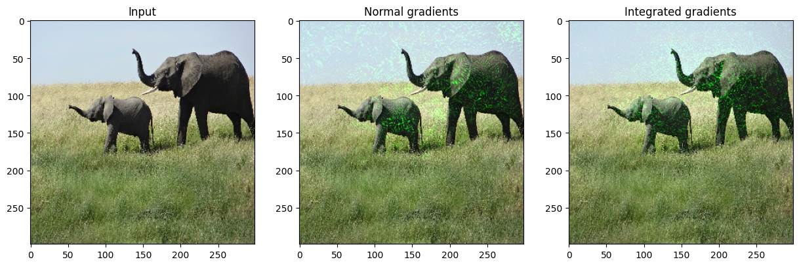
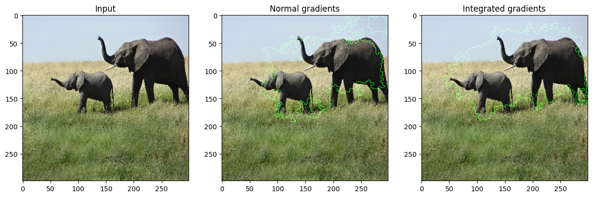

Model interpretability with Integrated Gradients
Author: A_K_Nain
Date created: 2020/06/02
Last modified: 2020/06/02
Description: How to obtain integrated gradients for a classification model.

Integrated Gradients
Integrated Gradients is a technique for attributing a classification model's prediction to its input features. It is a model interpretability technique: you can use it to visualize the relationship between input features and model predictions.
Integrated Gradients is a variation on computing the gradient of the prediction output with regard to features of the input. To compute integrated gradients, we need to perform the following steps:
-
Identify the input and the output. In our case, the input is an image and the output is the last layer of our model (dense layer with softmax activation).
-
Compute which features are important to a neural network when making a prediction on a particular data point. To identify these features, we need to choose a baseline input. A baseline input can be a black image (all pixel values set to zero) or random noise. The shape of the baseline input needs to be the same as our input image, e.g. (299, 299, 3).
-
Interpolate the baseline for a given number of steps. The number of steps represents the steps we need in the gradient approximation for a given input image. The number of steps is a hyperparameter. The authors recommend using anywhere between 20 and 1000 steps.
-
Preprocess these interpolated images and do a forward pass.
- Get the gradients for these interpolated images.
- Approximate the gradients integral using the trapezoidal rule.
To read in-depth about integrated gradients and why this method works, consider reading this excellent article.
References:
- Integrated Gradients original paper
- Original implementation
Setup
import numpy as np
import matplotlib.pyplot as plt
from scipy import ndimage
from IPython.display import Image, display
import tensorflow as tf
import keras
from keras import layers
from keras.applications import xception
# Size of the input image
img_size = (299, 299, 3)
# Load Xception model with imagenet weights
model = xception.Xception(weights="imagenet")
# The local path to our target image
img_path = keras.utils.get_file("elephant.jpg", "https://i.imgur.com/Bvro0YD.png")
display(Image(img_path))

Integrated Gradients algorithm
def get_img_array(img_path, size=(299, 299)):
# `img` is a PIL image of size 299x299
img = keras.utils.load_img(img_path, target_size=size)
# `array` is a float32 Numpy array of shape (299, 299, 3)
array = keras.utils.img_to_array(img)
# We add a dimension to transform our array into a "batch"
# of size (1, 299, 299, 3)
array = np.expand_dims(array, axis=0)
return array
def get_gradients(img_input, top_pred_idx):
"""Computes the gradients of outputs w.r.t input image.
Args:
img_input: 4D image tensor
top_pred_idx: Predicted label for the input image
Returns:
Gradients of the predictions w.r.t img_input
"""
images = tf.cast(img_input, tf.float32)
with tf.GradientTape() as tape:
tape.watch(images)
preds = model(images)
top_class = preds[:, top_pred_idx]
grads = tape.gradient(top_class, images)
return grads
def get_integrated_gradients(img_input, top_pred_idx, baseline=None, num_steps=50):
"""Computes Integrated Gradients for a predicted label.
Args:
img_input (ndarray): Original image
top_pred_idx: Predicted label for the input image
baseline (ndarray): The baseline image to start with for interpolation
num_steps: Number of interpolation steps between the baseline
and the input used in the computation of integrated gradients. These
steps along determine the integral approximation error. By default,
num_steps is set to 50.
Returns:
Integrated gradients w.r.t input image
"""
# If baseline is not provided, start with a black image
# having same size as the input image.
if baseline is None:
baseline = np.zeros(img_size).astype(np.float32)
else:
baseline = baseline.astype(np.float32)
# 1. Do interpolation.
img_input = img_input.astype(np.float32)
interpolated_image = [
baseline + (step / num_steps) * (img_input - baseline)
for step in range(num_steps + 1)
]
interpolated_image = np.array(interpolated_image).astype(np.float32)
# 2. Preprocess the interpolated images
interpolated_image = xception.preprocess_input(interpolated_image)
# 3. Get the gradients
grads = []
for i, img in enumerate(interpolated_image):
img = tf.expand_dims(img, axis=0)
grad = get_gradients(img, top_pred_idx=top_pred_idx)
grads.append(grad[0])
grads = tf.convert_to_tensor(grads, dtype=tf.float32)
# 4. Approximate the integral using the trapezoidal rule
grads = (grads[:-1] + grads[1:]) / 2.0
avg_grads = tf.reduce_mean(grads, axis=0)
# 5. Calculate integrated gradients and return
integrated_grads = (img_input - baseline) * avg_grads
return integrated_grads
def random_baseline_integrated_gradients(
img_input, top_pred_idx, num_steps=50, num_runs=2
):
"""Generates a number of random baseline images.
Args:
img_input (ndarray): 3D image
top_pred_idx: Predicted label for the input image
num_steps: Number of interpolation steps between the baseline
and the input used in the computation of integrated gradients. These
steps along determine the integral approximation error. By default,
num_steps is set to 50.
num_runs: number of baseline images to generate
Returns:
Averaged integrated gradients for `num_runs` baseline images
"""
# 1. List to keep track of Integrated Gradients (IG) for all the images
integrated_grads = []
# 2. Get the integrated gradients for all the baselines
for run in range(num_runs):
baseline = np.random.random(img_size) * 255
igrads = get_integrated_gradients(
img_input=img_input,
top_pred_idx=top_pred_idx,
baseline=baseline,
num_steps=num_steps,
)
integrated_grads.append(igrads)
# 3. Return the average integrated gradients for the image
integrated_grads = tf.convert_to_tensor(integrated_grads)
return tf.reduce_mean(integrated_grads, axis=0)
Helper class for visualizing gradients and integrated gradients
class GradVisualizer:
"""Plot gradients of the outputs w.r.t an input image."""
def __init__(self, positive_channel=None, negative_channel=None):
if positive_channel is None:
self.positive_channel = [0, 255, 0]
else:
self.positive_channel = positive_channel
if negative_channel is None:
self.negative_channel = [255, 0, 0]
else:
self.negative_channel = negative_channel
def apply_polarity(self, attributions, polarity):
if polarity == "positive":
return np.clip(attributions, 0, 1)
else:
return np.clip(attributions, -1, 0)
def apply_linear_transformation(
self,
attributions,
clip_above_percentile=99.9,
clip_below_percentile=70.0,
lower_end=0.2,
):
# 1. Get the thresholds
m = self.get_thresholded_attributions(
attributions, percentage=100 - clip_above_percentile
)
e = self.get_thresholded_attributions(
attributions, percentage=100 - clip_below_percentile
)
# 2. Transform the attributions by a linear function f(x) = a*x + b such that
# f(m) = 1.0 and f(e) = lower_end
transformed_attributions = (1 - lower_end) * (np.abs(attributions) - e) / (
m - e
) + lower_end
# 3. Make sure that the sign of transformed attributions is the same as original attributions
transformed_attributions *= np.sign(attributions)
# 4. Only keep values that are bigger than the lower_end
transformed_attributions *= transformed_attributions >= lower_end
# 5. Clip values and return
transformed_attributions = np.clip(transformed_attributions, 0.0, 1.0)
return transformed_attributions
def get_thresholded_attributions(self, attributions, percentage):
if percentage == 100.0:
return np.min(attributions)
# 1. Flatten the attributions
flatten_attr = attributions.flatten()
# 2. Get the sum of the attributions
total = np.sum(flatten_attr)
# 3. Sort the attributions from largest to smallest.
sorted_attributions = np.sort(np.abs(flatten_attr))[::-1]
# 4. Calculate the percentage of the total sum that each attribution
# and the values about it contribute.
cum_sum = 100.0 * np.cumsum(sorted_attributions) / total
# 5. Threshold the attributions by the percentage
indices_to_consider = np.where(cum_sum >= percentage)[0][0]
# 6. Select the desired attributions and return
attributions = sorted_attributions[indices_to_consider]
return attributions
def binarize(self, attributions, threshold=0.001):
return attributions > threshold
def morphological_cleanup_fn(self, attributions, structure=np.ones((4, 4))):
closed = ndimage.grey_closing(attributions, structure=structure)
opened = ndimage.grey_opening(closed, structure=structure)
return opened
def draw_outlines(
self,
attributions,
percentage=90,
connected_component_structure=np.ones((3, 3)),
):
# 1. Binarize the attributions.
attributions = self.binarize(attributions)
# 2. Fill the gaps
attributions = ndimage.binary_fill_holes(attributions)
# 3. Compute connected components
connected_components, num_comp = ndimage.label(
attributions, structure=connected_component_structure
)
# 4. Sum up the attributions for each component
total = np.sum(attributions[connected_components > 0])
component_sums = []
for comp in range(1, num_comp + 1):
mask = connected_components == comp
component_sum = np.sum(attributions[mask])
component_sums.append((component_sum, mask))
# 5. Compute the percentage of top components to keep
sorted_sums_and_masks = sorted(component_sums, key=lambda x: x[0], reverse=True)
sorted_sums = list(zip(*sorted_sums_and_masks))[0]
cumulative_sorted_sums = np.cumsum(sorted_sums)
cutoff_threshold = percentage * total / 100
cutoff_idx = np.where(cumulative_sorted_sums >= cutoff_threshold)[0][0]
if cutoff_idx > 2:
cutoff_idx = 2
# 6. Set the values for the kept components
border_mask = np.zeros_like(attributions)
for i in range(cutoff_idx + 1):
border_mask[sorted_sums_and_masks[i][1]] = 1
# 7. Make the mask hollow and show only the border
eroded_mask = ndimage.binary_erosion(border_mask, iterations=1)
border_mask[eroded_mask] = 0
# 8. Return the outlined mask
return border_mask
def process_grads(
self,
image,
attributions,
polarity="positive",
clip_above_percentile=99.9,
clip_below_percentile=0,
morphological_cleanup=False,
structure=np.ones((3, 3)),
outlines=False,
outlines_component_percentage=90,
overlay=True,
):
if polarity not in ["positive", "negative"]:
raise ValueError(
f""" Allowed polarity values: 'positive' or 'negative'
but provided {polarity}"""
)
if clip_above_percentile < 0 or clip_above_percentile > 100:
raise ValueError("clip_above_percentile must be in [0, 100]")
if clip_below_percentile < 0 or clip_below_percentile > 100:
raise ValueError("clip_below_percentile must be in [0, 100]")
# 1. Apply polarity
if polarity == "positive":
attributions = self.apply_polarity(attributions, polarity=polarity)
channel = self.positive_channel
else:
attributions = self.apply_polarity(attributions, polarity=polarity)
attributions = np.abs(attributions)
channel = self.negative_channel
# 2. Take average over the channels
attributions = np.average(attributions, axis=2)
# 3. Apply linear transformation to the attributions
attributions = self.apply_linear_transformation(
attributions,
clip_above_percentile=clip_above_percentile,
clip_below_percentile=clip_below_percentile,
lower_end=0.0,
)
# 4. Cleanup
if morphological_cleanup:
attributions = self.morphological_cleanup_fn(
attributions, structure=structure
)
# 5. Draw the outlines
if outlines:
attributions = self.draw_outlines(
attributions, percentage=outlines_component_percentage
)
# 6. Expand the channel axis and convert to RGB
attributions = np.expand_dims(attributions, 2) * channel
# 7.Superimpose on the original image
if overlay:
attributions = np.clip((attributions * 0.8 + image), 0, 255)
return attributions
def visualize(
self,
image,
gradients,
integrated_gradients,
polarity="positive",
clip_above_percentile=99.9,
clip_below_percentile=0,
morphological_cleanup=False,
structure=np.ones((3, 3)),
outlines=False,
outlines_component_percentage=90,
overlay=True,
figsize=(15, 8),
):
# 1. Make two copies of the original image
img1 = np.copy(image)
img2 = np.copy(image)
# 2. Process the normal gradients
grads_attr = self.process_grads(
image=img1,
attributions=gradients,
polarity=polarity,
clip_above_percentile=clip_above_percentile,
clip_below_percentile=clip_below_percentile,
morphological_cleanup=morphological_cleanup,
structure=structure,
outlines=outlines,
outlines_component_percentage=outlines_component_percentage,
overlay=overlay,
)
# 3. Process the integrated gradients
igrads_attr = self.process_grads(
image=img2,
attributions=integrated_gradients,
polarity=polarity,
clip_above_percentile=clip_above_percentile,
clip_below_percentile=clip_below_percentile,
morphological_cleanup=morphological_cleanup,
structure=structure,
outlines=outlines,
outlines_component_percentage=outlines_component_percentage,
overlay=overlay,
)
_, ax = plt.subplots(1, 3, figsize=figsize)
ax[0].imshow(image)
ax[1].imshow(grads_attr.astype(np.uint8))
ax[2].imshow(igrads_attr.astype(np.uint8))
ax[0].set_title("Input")
ax[1].set_title("Normal gradients")
ax[2].set_title("Integrated gradients")
plt.show()
Let's test-drive it
# 1. Convert the image to numpy array
img = get_img_array(img_path)
# 2. Keep a copy of the original image
orig_img = np.copy(img[0]).astype(np.uint8)
# 3. Preprocess the image
img_processed = tf.cast(xception.preprocess_input(img), dtype=tf.float32)
# 4. Get model predictions
preds = model.predict(img_processed)
top_pred_idx = tf.argmax(preds[0])
print("Predicted:", top_pred_idx, xception.decode_predictions(preds, top=1)[0])
# 5. Get the gradients of the last layer for the predicted label
grads = get_gradients(img_processed, top_pred_idx=top_pred_idx)
# 6. Get the integrated gradients
igrads = random_baseline_integrated_gradients(
np.copy(orig_img), top_pred_idx=top_pred_idx, num_steps=50, num_runs=2
)
# 7. Process the gradients and plot
vis = GradVisualizer()
vis.visualize(
image=orig_img,
gradients=grads[0].numpy(),
integrated_gradients=igrads.numpy(),
clip_above_percentile=99,
clip_below_percentile=0,
)
vis.visualize(
image=orig_img,
gradients=grads[0].numpy(),
integrated_gradients=igrads.numpy(),
clip_above_percentile=95,
clip_below_percentile=28,
morphological_cleanup=True,
outlines=True,
)
1/1 ━━━━━━━━━━━━━━━━━━━━ 5s 5s/step
WARNING: All log messages before absl::InitializeLog() is called are written to STDERR
I0000 00:00:1699486705.534012 86541 device_compiler.h:187] Compiled cluster using XLA! This line is logged at most once for the lifetime of the process.
Predicted: tf.Tensor(386, shape=(), dtype=int64) [('n02504458', 'African_elephant', 0.8871446)]

